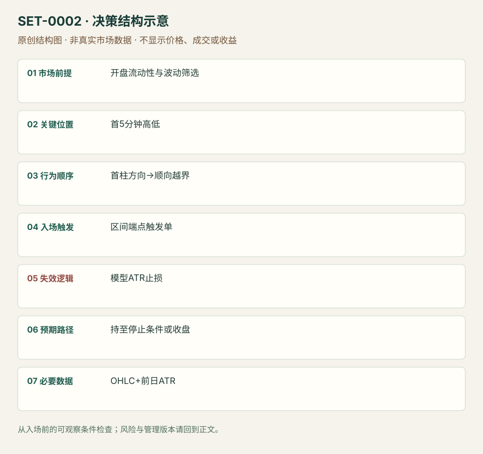

五分钟开盘区间突破
5-minute Opening Range Breakout · SET-0002 · reviewed · v1.0.0
盈利证据：author_backtest_specific_version。审查范围与来源版本见第13节；未知字段保留缺失原因。
1. 名称与快速概览
先用09:30–09:35的完整首柱确定区间和方向，只在其方向越过首柱高/低时入场；论文版本用前14日ATR的10%设置保护止损，未止损则16:00退出。
记录口径：PA supporting；必要数据 OHLC、volume、daily_ATR。名称性质：来源术语或研究术语。reviewed 只表示本条规则与证据记录审查通过，盈利状态为 author_backtest_specific_version。
2. 本质与行为假说
观察是开盘首柱方向与后续区间越界。作者认为首段方向可能反映日内供需；该解释不是机构身份观测。这个记录的核心是时间窗口和突破动量，PA辅助提供水平，不能因此自动归为纯PA。
3. 适用市场与环境
论文规则：开盘价大于5美元，前14日日均成交量至少100万股，前14日ATR大于0.50美元。所有阈值是论文美股版本，不是通用市场标准。十字星首柱不发订单。
来源实用市场：美国上市股票（论文样本）。
Session：美股/ES现金参考段 09:30–16:00 America/New_York；收盘前平仓。期货夜盘单独建背景，不将其并入开盘区间。
跨市场：本版不主张已经验证的跨市场迁移；更换市场必须重定数据来源、流动性与session。
4. 出现前的观察清单
必要：5分钟完整收盘；只使用已知前14日统计；标记区间高低与首柱方向。增强：异常相对成交量，但过滤版本应与基础版本分别记录。否决：未形成区间、方向十字星、点差吞噬ATR止损或暂停交易。
5. 形成过程与状态转换
事前流动性筛选 → 9:30开盘 → 9:35冻结首柱高低及方向 → 仅顺首柱方向挂触发单 → 越界成交后附保护订单 → 止损或当日收盘退出。禁止用当天最终成交量筛选。
6. Entry trigger 与执行方式
论文2.1节：阳首柱在其最高价买入触发，阴首柱在最低价卖出触发，不反手交易相反方向。触发单不保证在触发价成交；回测与实盘成交须单独核验。
7. Invalidation 与止损逻辑
论文版是成交价外侧10%前14日ATR；这是模型风险参数，不等于自然结构失效。返回开盘区间代表动量假说减弱，但基础回测并未因此立即退出。不能把结构版止损与论文收益拼接。
8. Exit、target 与 trade management
基础规则当日16:00 America/New_York平仓；不设置事后极值目标。主观版可按新摆动管理，但属于另一个待测管理版本。论文每股佣金0.0035美元、样本2016–2023；本库未重跑，也未独立确认订单级滑点。
9. 常见 variations
1/15/30/60分钟区间和结构止损均为参数或管理变体，不另计数。Stocks in Play相对量筛选是样本筛选版本，必须与基础策略分别评估。IB仅因时长变成60分钟不另创setup。
10. 失败方式与不交易条件
正常亏损：顺向越界后反转触及模型止损。未成立：9:35前预判区间。偏离：双向触发、十字星仍交易。执行局限：开盘点差、熔断、缺口穿越止损和同一分钟顺序不可判定。
11. 与相近 setups 的区别
- SET-0001：本条在区间外继续方向；前日失败突破反转已经观察到外侧推进失败。
12. 图表与案例解读
已查看论文PDF页8（印刷页7）Figure 2：BLDR，2024-01-23，5分钟图。首柱阴线，10:00附近下破；图注明确是hypothetical交易示例。历史价格图可核对，作者描述的13.62R不能当作审计实盘成交。
- [VIS-000002] BLDR五分钟图上的开盘区间空头假设执行示例；定位：PDF页8／印刷页7，Figure 2。灰色区域为盘前盘后，箭头标记模型入场与收盘退出；图表完整后半段不能用于首段决策。 验证：chart_viewed_hypothetical_execution。
本地原创示意（VIS-000059，非真实市场数据）：

小屏阅读可打开原尺寸示意图并缩放。

此图用于对照识别顺序与风险定义；不计入真实案例覆盖率。
视觉材料元数据与查看范围
- VIS-000002 · real_source_chart / historical_model_overlay / chart_viewed_hypothetical_execution
品种：BLDR；日期：2024-01-23；周期：5分钟；时区：America/New_York（正文ET）
执行为假设而非实盘审计 - VIS-000059 · synthetic_structure_diagram / illustration_only / generated_not_market_evidence
品种：未知/不适用；日期：未知/不适用；周期：未知/不适用；时区：未知/不适用
无真实品种、日期或价格：这是结构示意
13. 证据、分歧与未知项
已核对原论文的策略定义、基础模型与数据章节。此记录规则完整但来源族独立佐证有限；作者回测与本研究验证分开。基础广泛股票组合并非标题暗示的无条件高收益，来源明确报告其弱于同期基准。
- [EVD-000002] Carlo Zarattini / Andrea Barbon / Andrew Aziz，《A Profitable Day Trading Strategy For The U.S. Equity Market》，SRC-0005；定位：PDF页6–10，§2、§2.1、Figure 2。支持：首五分钟方向、流动性筛选、10%ATR止损和收盘退出；CRSP/IQFeed样本及佣金假设
审查例外：此条只有一份富信息原始资料，足以还原本条规则；独立佐证有限，未用背景页冒充第二份核验。后续优先寻找独立规则/失败案例。
14. 可用于复盘的检查表
- ☐ 下单前的前提可核对：开盘流动性与波动筛选
- ☐ 事前标记位置：首5分钟高低
- ☐ 行为按顺序出现：首柱方向→顺向越界
- ☐ 实际触发符合选定版本：区间端点触发单
- ☐ 事先写明本次否定条件：模型ATR止损
- ☐ 目标/路径只用当时已知信息：持至停止条件或收盘
- ☐ 数据满足 OHLC+前日ATR；记录时间、点差、滑点、队列和未成交
- ☐ 记录截止平仓及规则偏离；正常亏损不事后改成“未成立”
15. 后续验证问题
用逐笔或较细数据处理同柱先后顺序；重测2016–2023外样本与未成交订单。先复现基础版，再独立加入相对成交量过滤；记录不同市场波动与点差分层。
双向相关导航
- SET-0001 前一交易区间突破失败后的开盘反转 ORB等待固定开盘区间形成并顺突破入场；本条已有外侧突破失败并交易反向回收。
- SET-0021 盘前高点的开盘动量突破 0002 必须等待第一根5分钟棒结束；本条的边界在盘前已知并可在开盘立刻触发。
- SET-0035 IB 首侧失败后的反侧突破与回收 0002 一侧首5分钟方向突破即可，本条必须先错侧失败再反侧接受，且IB窗口不同。
- SET-0048 按同一时刻历史波动定义的日内噪声带动量 0002 参考当日首5分钟实价区间；本条用过去14日同一时刻动态幅度，触发与风险检查时钟不同。
本条来源：SRC-0005